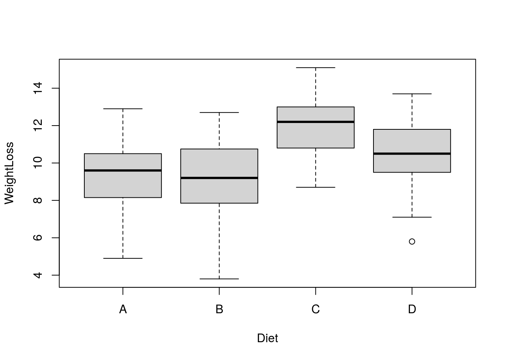
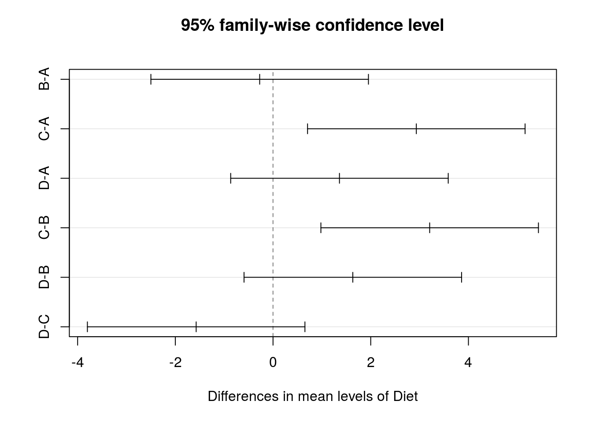

One Way ANOVA in R
by DocP, 08 Jun 2020
Reference: Marin video R Tutorial 4.6
Data set: DietWeightLoss
Download and attach the data set if you want to follow along.
Analysis of Variance or ANOVA is one of the most common and powerful statistical techniques available. While ANOVA designes can become quite complicated, the single factor design is quite straightforward and easy to understand. It is also very simple to perform in R.
The null hypothesis (Ho) for the ANOVA is that all groups will perform equally (in this case, lose of gain the same amount of weight). The alternative hypothesis (Ha) is that at least one group will differ from at least one other in terms of weight loss.
As usual it is a good idea to plot the data so that we can better see the manner in which the different groups are distributed.
boxplot(WeightLoss ~ Diet)
“Weightloss” is the quantitative variable and “Diet” is the grouping variable, so the above code is read “create a boxplot of weightloss broken down by diet”. We can see already that diets “A” and “B” are very similar, diet “C” shows the greatest weight loss and diet “D” is intermediate. The ANOVA will tell us if there is a satistically significant difference between any of the groups.
The “aov” command is used to perform the analysis (technically called a one way analysis of variance). As there is only one dependent variable (WeightLoss) and one independent variable (Diet), the commands in R are quite simple. Note that I chose to store the results in a variable called ANOVA1.
ANOVA1 <- aov(WeightLoss ~ Diet)Running the analysis does not produce any visible output, so we should use the “summary” command to generate the ANOVA table.
summary( ANOVA1)## Df Sum Sq Mean Sq F value Pr(>F)
## Diet 3 97.33 32.44 6.118 0.00113 **
## Residuals 56 296.99 5.30
## ---
## Signif. codes: 0 '***' 0.001 '**' 0.01 '*' 0.05 '.' 0.1 ' ' 1There is a lot of information contained in the summary table but the probability associated with the F test is of most iterest to us. The probability associated with this overall F test is 0.00113, which is less than our critical probability of 0.05, allowing us to reject our null hypothesis. That means there is at least one group that differs from at least one other group, but it does not tell us where that difference is to be found. We need to perform additional tests to determine this. There are several techniques available to perform a post hoc (after the fact) analysis but one of the most often used is the Tukey HSD test. We perform the Tukey on the results of our ANOVA (i.e., on the information in ANOVA1).
TukeyHSD(ANOVA1)## Tukey multiple comparisons of means
## 95% family-wise confidence level
##
## Fit: aov(formula = WeightLoss ~ Diet)
##
## $Diet
## diff lwr upr p adj
## B-A -0.2733333 -2.4999391 1.9532725 0.9880087
## C-A 2.9333333 0.7067275 5.1599391 0.0051336
## D-A 1.3600000 -0.8666058 3.5866058 0.3773706
## C-B 3.2066667 0.9800609 5.4332725 0.0019015
## D-B 1.6333333 -0.5932725 3.8599391 0.2224287
## D-C -1.5733333 -3.7999391 0.6532725 0.2521236As you can see, the Tukey gives us a lot of information. Column 1 (on the left) tells us which two groups are being compared. Column two provides the difference between the means for the two groups in the comparison. Columns three and four give the lower and upper limits of the 95% confidence interval for the differene between the two means. Column 5, on the right provides the probability associated with the coparison undr consideration. As usual, we are looking for a probability less than or equal to 0.05. We can see in this case that comparisons C-A and C-B have probability values lower than 0.05. Diet C, therefore, is different from both diet A and Diet B. None of the comparisons involving Diet D are statistically significant.
A visual representation of the Tukey results can be obtained as follows:
plot(TukeyHSD(ANOVA1))
This plot is a graphic depiction of the 95% confidence interevals for the Tukey results. Those bars that do not cross the zero point are the comparisond that are significalt at the 0.05 level.
Finally, if the assumptions of the ANOVA are not met, we might choose to perform a Kruskal-Wallis test. (See Crib Sheet U1)
Note: In order to obtain summary statistics for variables in an ANOVA design it is often helpful to subset the data using square brackets [ ]. Typical code looks like this: mean(WeightLoss[Diet == “A”]). This code would give us the average weight loss for only those individuals who followed diet A.
mean(WeightLoss[Diet == "A"])## [1] 9.18Similarly, sd(WeightLoss[Diet == “B”]) would give us the standard deviation of the variable WeightLoss for only those subjects who followed diet B.
sd(WeightLoss[Diet == "B"])## [1] 2.781949The operator “==” in those code samples means “is exactly equal to” and tells R to use only those WeightLoss observations which have specific value for the independent variable Diet.